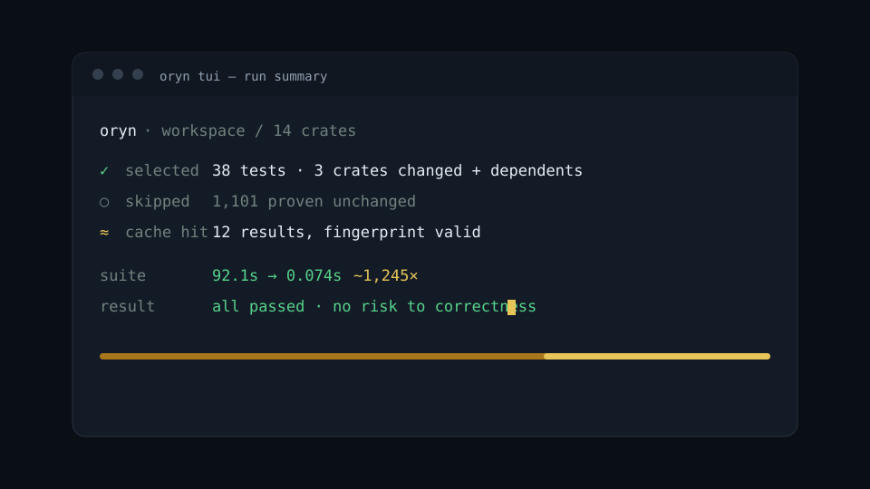

Compile less. Test less.
Trust the results.
Oryn is a safe, Rust-native accelerator for Cargo test suites. It runs only the tests your change can affect, skips the ones it can prove unchanged, and never trades correctness for speed.
$ cargo install oryn
Stable Rust · no AI · no nightly

Fast because it's right.
Most test speedups guess. Oryn proves it from the dependency graph, from content fingerprints, and from statistics.
Runs what your change can affect
Oryn reads git diff to find the changed crates, then includes their dependents. Tests it can prove unchanged are skipped, not sampled, not guessed.
A cache that can't lie
A BLAKE3 Merkle fingerprint covers the whole file closure, Cargo.lock, and the compiler version. If anything that matters changes, the result is invalidated.
Flaky tests, scored honestly
Wilson and Jeffreys credible intervals turn repeated runs into real probabilities, with a rerun budget derived from the math, and O(log n) bisection finds the culprit fast.
Down to the function
oryn cover and oryn test --fn narrow selection further to the functions your diff actually touches.
Fix the build, too
The build doctor applies sane defaults: line-tables-only debug info, split debuginfo, a faster linker, and sccache wrapping, with oryn tune --apply. oryn tui gives you the whole picture.
A shorter loop, with proof.
Three mechanisms that each earn their speed instead of assuming it.
Follow the dependency graph
Changed crates and their dependents run. Everything provably unchanged is skipped.
Fingerprint the inputs
A BLAKE3 Merkle fingerprint over the file closure, Cargo.lock, and rustc version decides what can be reused.
Measure flakiness
Credible intervals and a derived rerun budget turn flaky behavior into real statistics, then bisect to the culprit.
Add it to your toolchain.
Stable Rust is all you need. No AI, no nightly compiler, no separate daemon to babysit.
$ cargo install oryn
Copied exactly · stable Rust
Optional integrations: nextest and llvm-tools give Oryn more detail to work with. Neither is required.